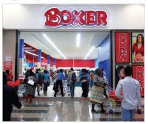
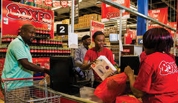

PICAN PAY
Boxer Superstores is a South African based, limited-range discount supermarket trading in the Southern African retail marketplace. Established in April 1977, Boxer is headed up by MD Marek Masojada and is a national brand with a portfolio of over 280 stores and counting.
The first franchise was opened in 1996, and we are full members of the Franchise Association of South Africa (FASA). If you are thinking of starting a motor spares business in South Africa, you need a strategic business plan. In both cases, you can expect to pay an initial franchise fee of R150,000.
Dumakude Investments (Pty) Ltd, I O E Holdings (Pty) Ltd, Ndumu Investments (Pty) Ltd and Smithhold (Pty) Ltd each hold 25% of the shares in Boxer Holdings. Boxer Holdings directly controls Boxer Superstores through its majority shareholding of 78.09% in the issued share capital of Boxer Superstores.